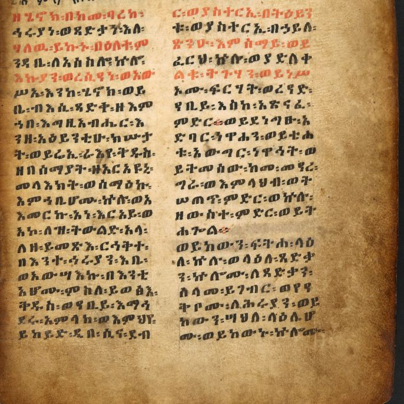

Why isn't the Book of Enoch in this translation?
JULY 10, 2026

"Why did you not include the Book of Enoch in your translation of the Bible?"
This project's source text has been the Masoretic Hebrew Bible — the Tanakh, pointed Hebrew and all — since the very first line of the very first chapter. The Book of Enoch was never part of that corpus to begin with. There's no Masoretic Hebrew text of Enoch to translate from; it doesn't survive complete in Hebrew at all. The only complete text is in Ge'ez (classical Ethiopic), with fragments of the original Aramaic and some Greek turning up among the Dead Sea Scrolls and elsewhere. So leaving it out wasn't a judgment call about whether it belongs — it was outside this project's stated method before the question of canon ever came up.
The broader canon question is genuinely interesting, though. Enoch isn't in the Jewish canon, the Protestant 66-book list this project's Table of Contents is built around, or even the Catholic Deuterocanon (the extra books the Douay-Rheims tradition includes — Tobit, Judith, Maccabees, and so on — don't include it either). The one tradition where it actually is canonical scripture is the Ethiopian Orthodox Tewahedo Church, which is often the detail people miss — it's not that Enoch was universally rejected, it's that one major, ancient Christian tradition kept it and the others didn't.
And it wasn't obscure or forgotten in the meantime. Multiple Aramaic copies of it turned up at Qumran among the Dead Sea Scrolls, so it was clearly in real circulation in Second Temple Judaism. And the New Testament itself references it — the epistle of Jude, verses 14–15, cites "Enoch, the seventh from Adam" prophesying judgment, language that traces straight back to Enoch's text. So whatever the reasons different communities eventually settled their canons the way they did (and scholars don't agree on one tidy explanation — theories range from its pseudepigraphal authorship claim, to discomfort with its angelology and cosmology, to it simply falling outside the criteria later rabbinic and church authorities used), it was clearly read and taken seriously by people in a position to know it well.
Two places in this translation touch Enoch's world directly: the man himself — "Enoch walked with God, and then he was not there, for God took him" — appears in Genesis 5:21–24, the two-verse mystery from which the later book grew; and the "sons of God" episode the Book of Enoch expands so dramatically opens Genesis 6.
If this project ever extends to it, that's a real possibility — but it would be a different kind of undertaking than the Hebrew chapters posted so far, since it means working from Ge'ez and the Aramaic/Greek fragments instead of pointed Masoretic Hebrew, and being upfront that it sits outside the Tanakh and the Protestant canon this translation has otherwise followed.
Read in the text
- Genesis 5
- Genesis 6
- Compared against the translation’s seven-version shelf — the NIV, the KJV, the Douay-Rheims, The Living Bible, the 1599 Geneva Bible, the American Standard Version, and the New World Translation. See how the translation is made.